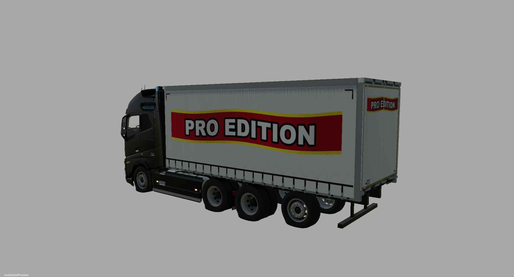
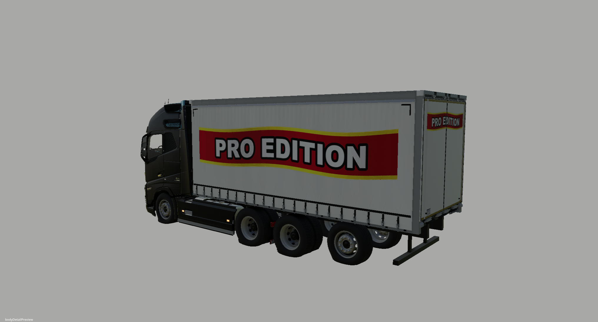

Box body: actual before and after
Matching camera and editor lighting. Use Close-up to inspect the buckles and seams; zoom to see the original pixels.
BEFORE
AFTER
Upgraded curtain surface, fabric maps, rounded buckle hardware, rail trim, fasteners, and door seals. These are actual GIANTS Editor captures; in-game lighting may differ.